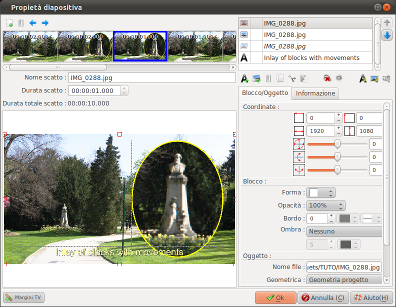
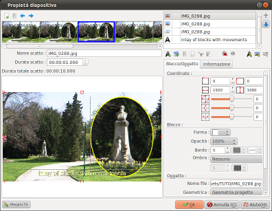
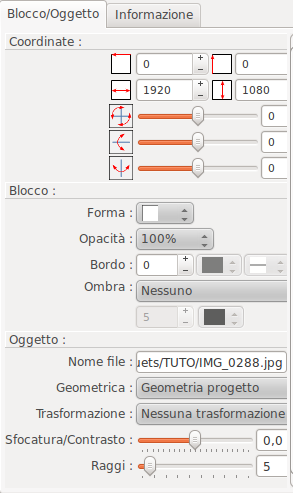

Introduzione
La finestra Proprietà
diapositiva consente di definirele impostazioni per le
diapositive:

Questa finestra si richiama con un doppio clic nella zona di assemblaggio di una diapositiva, nella timeline or by double-clicking the preview zone.

Questa finestra si richiama con un doppio clic nella zona di assemblaggio di una diapositiva, nella timeline or by double-clicking the preview zone.
Descrizione della finestra
Questa finestra comprende
numerose zone:
- Le zone a sinistra corrispondono alle impostazioni della diapositiva e delle sue inquadrature
- Le zone a destra corrispondono alle impostazioni per i blocchi
A sinistra, in alto: la zona delle inquadrature
La zona delle inquadrature è costituita da una barra
degli strumenti e una linea temporale.
La barra degli strumenti delle inquadrature

|
Aggiunge una inquadratura alla fine della linea temporale |
 |
Rimuove l'inquadratura selezionata |
| Modifica l'ordine delle inquadrature , spostando l'inquadratura selezionata un passo a sinistra | |
| Modifica l'ordine
delle inquadrature , spostando l'inquadratura
selezionata un passo a destra |
Remark: It is also possible to change the shots order using Drag and Drop
La linea temporale delle inquadrature
La linea temporale delle
inquadrature mostra le riprese come miniature,
nell'ordine in cui saranno svolte ( da sinistra a destra ).
Per ogni inquadratura , la miniatura mostra :
Per ogni inquadratura , la miniatura mostra :
- La durata dell'inquadratura
- Un'immagine rappresentativa dell'inquadratura alla fine della sua durata
La zona delle impostazioni temporali dell'inquadratura
| Durata inquadratura |
Indicare qui la durata
dell'inquadratura attualmente selezionata. Per l'ultima inquadratura della diapositiva , c'è una durata minima . Le seguenti regole
vengono utilizzate per calcolare la durata minima
della ripresa :
|
| Totale durata
inquadratura |
La durata totale della
diapositiva è visualizzata qui. Il tempo specificato tiene conto delle possibili regolazioni per la durata minima della ripresa come descritto sopra. |
| Nome dell'inquadratura |
Indica il nome della diapositiva. E 'questo il nome che apparirà sulla miniatura nella finestra temporale sulla finestra principale. |
A sinistra, nel mezzo: la zona di composizione
La zona di composizione
consente di spostare e ridimensionare in modo interattivo
blocchi per l'inquadratura selezionata.
I blocchi della composizione sono indicati con una cornice (per differenziarli da elementi grafici sullo sfondo).
Il blocco selezionato viene mostrato con maniglie di controllo ( quadratini che appaiono agli angoli e su bordi).
Con il mouse:
I blocchi della composizione sono indicati con una cornice (per differenziarli da elementi grafici sullo sfondo).
Il blocco selezionato viene mostrato con maniglie di controllo ( quadratini che appaiono agli angoli e su bordi).
Con il mouse:
- Per ridimensionare il blocco, fare clic su una delle maniglie e trascinare con il mouse tenendo il pulsante del mouse premuto .
- Per spostare il blocco, fare clic sul blocco e trascinare con il mouse tenendo il pulsante del mouse premuto .
Con la tastiera:
- Per spostare il blocco, utilizzare i tasti freccia.
- Per modificare la dimensione del blocco , utilizzare
SHIFT + frecce per spostare la maniglia nell'angolo in
alto a sinistra o CTRL + frecce per spostare la maniglia
nell'angolo in basso a destra.
Double
click on a block allows to open the block editor
associated with the block type (for a text block: open the
text editor. For an image block open the reframing dialog,
etc.)
A destra in alto: la zona blocco
La zona blocco è costituita da una barra degli strumenti e un tabella dei blocchi.La tabella dei blocchi
La tabella elenca i blocchi,
da cima a fondo , i blocchi presenti nella diapositiva .
I blocchi sono visualizzati su 3 colonne:
I blocchi sono visualizzati su 3 colonne:
- La prima colonna indica il tipo di blocco (
 =Titolo,
=Titolo,
 =Immagine,
=Immagine,  =Video)
=Video) - La seconda colonna indica il blocco che riproduce il
suono durante l'inquadratura : viene visualizzata l'icona
 che ha l'audio
che ha l'audio
- La terza colonna indica:
- Il testo del blocco , se è un blocco titolo
- Il nome del file, se è un blocco immagine o video
Il blocco attivo è
selezionato nella tabella blocco. Per cambiare il blocco
attivo , è sufficiente selezionare un blocco nella
lista o nella zona composizione.
Double click on a block allows to open the block editor associated with the block type (for a text block: open the text editor. For an image block open the reframing dialog, etc.)
Osservazioni:
Double click on a block allows to open the block editor associated with the block type (for a text block: open the text editor. For an image block open the reframing dialog, etc.)
Osservazioni:
- L'ordine blocco può cambiare da un'inquadratura all'altra
- I blocchi nascosti sono mostrati in scala di grigi e in corsivo
La barra degli strumenti
| Modificare l'ordine dei blocchi spostando il blocco attivo verso l'alto ( verso lo sfondo ) | ||
| Modificare l'ordine dei blocchi spostando il blocco attivo verso il basso ( verso il primo piano) | ||
 |
Aggiungi un nuovi
blocco titolo |
|
 |
Add one or several new blocks of images or video. A file selection dialog appears allowing you to select files. Note: in case of multiple selection, files are added in the alphabetical order of the filenames or in the digital order of shots (according to the option selected in the configuration dialog). | |
|
Rimuovere il blocco
corrente |
|
 |
Copia il blocco
corrente negli appunti di ffDiaporama. La copia è fatta con i parametri definiti del blocco correntemente selezionato. |
|
 |
Copia il blocco
corrente negli appunti di ffDiaporama e lo rimuove
dalla diapositiva. La copia è fatta con i parametri definiti del blocco correntemente selezionato. |
|
 |
Incolla il blocco dagli appunti di ffDiaporama e inseriscilo. | |
 |
Fare clic su questo pulsante per rendere visibile o nascosto il blocco . Nota : i blocchi video nascosti sono automaticamente in pausa | |
|
Fare clic su questo pulsante per dare il suono, in questa ripresa, al blocco video corrente. ( Questo pulsante è attivo solo per i video. ) | |
 |
Fare clic su questo
pulsante per richiamare la Fiestra
di modifica blocco testo. |
|
 |
Fare clic su questo
pulsante per richiamare la Finestra
inquadratura immagine e correzione Questo pulsante è attivo solo per gli oggetti che contengono immagini e video. |
|
 |
Fare clic su questo
pulsante per richiamare la Finestra
taglia video Questo pulsante è attivo solo per gli oggetti che contengono video. |
|
Osservazioni:
- Tutti i blocchi, che siano titolo, immagine o video,
possono avere un elemento di testo .
- Durante l'inserimento di un nuovo blocco ( Aggiungi titolo , Aggiungi file o Incolla) , il blocco viene inserito :
- In modalità visibile per l'inquadratura attuale e per tutte quelle seguenti
- In modalità nascosta per le inquadrature situate prima di quella attuale
- Sempre in ultima posizione nella lista dei blocchi ( in primo piano)
In basso a destra : la scheda di
Blocco/Oggetto
Questa scheda consente di impostare le dimensioni e la
posizione del blocco attivo e il suo contenuto .|  |  |
Rappresenta la posizione orizzontale del blocco da
sinistra. Questa posizione è definita come una percentuale (%) della larghezza totale dell'immagine in pixel o in pixel (per uno schermo 1080p) secondo l'unità definita nella finestra di configurazione . |
|
 |
Rappresenta la posizione verticale del blocco
dall'alto. Questa posizione è definita come una percentuale (%) dell'altezza totale dell'immagine in pixel o in pixel (per uno schermo 1080p) secondo l'unità definita nella finestra di configurazione . |
||
 |
Rappresenta la larghezza del blocco. Questa posizione è definita come una percentuale (%) della larghezza totale dell'immagine in pixel o in pixel (per uno schermo 1080p) secondo l'unità definita nella finestra di configurazione . |
||
 |
Rappresenta l'altezza del blocco. Questa posizione è definita come una percentuale (%) dell'altezza totale dell'immagine in pixel o in pixel (per uno schermo 1080p) secondo l'unità definita nella finestra di configurazione . |
||
 |
Rotazione attorno all'asse Z in gradi. | ||
 |
Rotazione attorno all'asse Y in gradi. | ||
 |
Rotazione attorno all'asse X in gradi. | ||
| Geometria | Consente
di selezionare il vincolo geometrico da applicare al
blocco. Sono disponibili tre tipi di vincolo :
|
||
| Forma |
Consente di selezionare una forma per il blocco. La
forma selezionata verrà utilizzata come :
|
||
| Opacità |
Opacità | Definisce l'opacità del blocco. Questo valore si applica anche al testo del blocco. | |
| Bordo |
Spessore del bordo | Definisce lo spessore del bordo. (Questo valore è definito come 1/1080 dell'altezza dello schermo. Un valore di 10 corrisponde a 10 punti su uno schermo 1920x1080 FullHD, ma solo 6 punti su uno schermo 1280x720.) | |
| Colore
bordo |
Definisce il colore della linea da utilizzare per disegnare il bordo | ||
| Tipo di
linea del bordo |
Definisce il tipo di linea (solida, tratteggiata , ecc) | ||
| Ombra |
Posizione
ombra |
Definisce in quale angolo l'ombra sarà posizionata (Nota: la posizione dell'ombra è indipendente dalla rotazione del blocco: l'angolo in basso a destra è sempre in basso a destra , qualunque sia la rotazione è applicata) . | |
| Distanza dell'ombra | Definisce la distanza tra il blocco e la sua ombra | ||
| Colore |
Colore dell'ombra |
||
Oggetto :
Definizione di un pennello di sfondo per la forma :| Nessun pennello | La forma non avrà sfondo e sarà quindi totalmente trasparente . |
| Pennello solido |
Consente di selezionare un colore semplice . |
| Modello pennello |
Consente di
selezionare :
|
| Gradiente a 2 colori | Consente di selezionare un gradiente di 2 colori |
| Gradiente a 3 colori | Consente di selezionare un gradiente di 3 colori |
| Immagine dalla libreria | Consente di selezionare un'immagine dalla libreria |
In basso a destra : la scheda Informazioni
Visualizzare informazioni sul blocco:- Se il blocco è un titolo: mostra che è un
titolo
- Se il blocco è un'immagine: mostra i valori EXIF contenuti nelle immagini
- Se il blocco è un video: mostra le informazioni di dimensione e il formato del video
Margini TV
 Attivare o disattivare i righelli corrispondenti ai margini
dei televisori.
Attivare o disattivare i righelli corrispondenti ai margini
dei televisori.- Se i margini TV sono abilitati , i righelli corrispondenti
a questi margini e al centro dello schermo sono
visualizzati. Il puntatore del mouse sarà attratto
verso i righelli .
Ciò vale sia per i movimenti dei blocchi che per i movimenti delle maniglie di ridimensionamento . - In ffDiaporama, i margini TV sono del tipo "Zona
sicura titolo" e sono definiti sul 90% di larghezza e
90% in altezza, per tutte le geometrie del progetto.
Se necessario , questo punto può essere migliorato nelle future versioni del software!
Vedi anche
 WIKIPEDIA |
Descrizione dei margini TV e sovrascansione Descrizione di EXIF - Formato del file immagine interscambiabile |
ffDiaporama 1.1